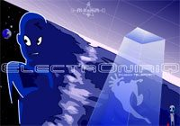

teleport
Fichiers conservés de la collection Metaflash.
Ouvrir l’imageFichiers conservés
images/teleport.jpg


Informations du fichier
- Nom conservé
- d4ede4c82357b9f3a4c0b03434df2f7b6717de18d67b4f72f80cf74eb92fd7c4.jpg
- Taille
- 9,415 octets
- SHA-256
- d4ede4c82357b9f3a4c0b03434df2f7b6717de18d67b4f72f80cf74eb92fd7c4
Provenance dans la sauvegarde Metaflash :
- images/teleport.jpg (d4ede4c82357b9f3a4c0b03434df2f7b6717de18d67b4f72f80cf74eb92fd7c4)